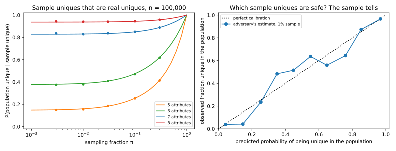

15 Linkage and re-identification
15.1 Why this matters
A hospital wants to share its discharge records with researchers. It deletes the names, the addresses and the insurance numbers. It keeps what the research needs, which is the postcode, the date of birth, the sex and the diagnosis. Nobody’s name is in the file. Is anyone in it identifiable?
Usually, yes. Most people are the only person with their combination of postcode, birth date and sex. Anyone who holds a second table with names and those same three columns, such as a voter roll, can join the two tables on them. The join puts a name back on most rows. This is a linkage attack, and putting a name back on a “de-identified” record is re-identification. The attack needs no model and no queries, only the release and some auxiliary data about the people in it. The other chapters of this part attack trained models, while this one attacks the data itself. This chapter explains why removing names was never the same as anonymizing.
The idea that runs through the chapter is that identifying information can be measured in bits, and that bits add up. Write \(n\) for the number of people in a population. Picking one of them takes \(\log_2 n\) bits of information, because each bit can halve the number of candidates and you have to halve \(n\) down to 1. Singling out one of the 248.7 million people counted in the United States in 1990 takes 27.9 bits. For the world’s 8 billion people it takes 32.9 bits.
Each attribute you learn about someone carries bits too. An attribute with \(v\) equally likely values carries \(\log_2 v\) bits, so a person’s sex carries 1 bit. A birth date is one of about 29,200 days in 80 years, worth about 14.8 bits. When attributes are independent, their bits add. The reason is that the chance of a combination of values is then the product of the chances of each value, and a logarithm turns that product into a sum. For correlated attributes the sum overstates the bits, as a later section explains.
Once the bits that an adversary knows exceed \(\log_2 n\) by a few, almost everyone is unique. The rest of the chapter makes that sentence precise. It does so for tidy tables, for sparse data such as movie ratings, and for releases that contain only a sample of the population.
15.2 Quasi-identifiers and the linkage attack
Data protection practice sorts the columns of a table into three kinds. Direct identifiers name a person on their own, like a name, a social security number or an email address. Sensitive attributes are what the release is about and what must not be tied to a person, such as a diagnosis or a salary. Quasi-identifiers are the columns in between. None of them names anyone alone, but in combination they often single out one person, and they also appear in other datasets next to names.
ZIP code, birth date and sex are the classic example of quasi-identifiers. The most common form of “de-identification” removes the direct identifiers and keeps the quasi-identifiers, and the linkage attack is aimed at exactly that gap.
Threat models scores an attack with a game, in which a challenger sets a task and the adversary wins or loses. In this section, \(n\) is the number of records in the release, one per person. In the linkage game, the challenger draws a target uniformly at random from those records and gives the adversary the target’s quasi-identifiers. The adversary wins if it outputs the target’s record.
Because the target is drawn from the release, the adversary knows that the target is in it. The result below needs this condition. It fits a curious neighbour, or an insurer with a list of patients, who knows that a particular person was treated at the hospital. Without it, a unique match may belong to someone who shares the target’s quasi-identifiers but is not in the release. The last section of this chapter asks how much that uncertainty protects anyone.
Group the records of the release into equivalence classes, the sets of records with identical quasi-identifiers. Write \(J\) for the number of classes, which is the number of distinct combinations in the release. A target alone in its class is found for sure. A target in a class of \(k\) records is found one time in \(k\), because the adversary can only pick one of the look-alikes at random. Now think of the whole class. The target lands in it \(k\) times as often as in a class of one record, but the adversary is right only one time in \(k\) when it does. So each class adds one record’s worth of wins whatever its size, and averaging over the target gives the success probability \[\Pr[\text{win}] = \frac{J}{n}. \tag{15.1}\]
No adversary that sees only the quasi-identifiers can do better than this. Within a class, the records differ only in their sensitive attribute, which the adversary does not know, so the target is equally likely to be any of them. Every guess inside the class therefore wins with the same chance, and a guess outside it never wins.
| ZIP code | Birth date | Sex | Diagnosis |
|---|---|---|---|
| 02138 | 1961-03-14 | F | asthma |
| 02138 | 1972-11-02 | M | diabetes |
| 02138 | 1972-11-02 | M | hypertension |
| 02139 | 1958-06-21 | F | depression |
| 02139 | 1990-01-01 | F | migraine |
| 02139 | 1990-01-01 | F | asthma |
| 02139 | 1990-01-01 | F | fracture |
| 02141 | 1983-09-30 | M | pneumonia |
| Name | ZIP code | Birth date | Sex |
|---|---|---|---|
| Ana Silva | 02138 | 1961-03-14 | F |
| Ben Cole | 02138 | 1972-11-02 | M |
| Carla Diaz | 02139 | 1958-06-21 | F |
| Dan Eto | 02141 | 1983-09-30 | M |
Join the hospital release in Table 15.1 with the voter roll in Table 15.2 on the three shared columns. Ana, Carla and Dan each match exactly one record, so their diagnoses come out with certainty. Ben matches two records, so the adversary gets diabetes or hypertension and is right half the time. The game, though, draws its target from every record of the release, including the women born on 1990-01-01, who would appear on a fuller voter roll. Ana’s, Carla’s and Dan’s records each form a class of one, and Ben’s record and its look-alike form a class of two. The three women form a fifth class. With 5 classes among 8 records, Equation 15.1 gives a success of \(5/8 = 0.625\).
This is, in miniature, how the computer scientist Latanya Sweeney re-identified the governor of Massachusetts in the late 1990s. The state had released the hospital records of its employees and their families without names. On the Cambridge voter roll, which Sweeney bought for twenty dollars, six people shared the governor’s birth date, and three of them were men. Only one of those lived in his ZIP code.
Sweeney also measured how common such uniqueness is. From the 1990 census tables, she estimated that 87% of the US population was likely unique on ZIP code, birth date and sex. The figure was 53% with the city in place of the ZIP code, and 18% with the county.
For this adversary, uniqueness is the whole story. Each unique record is a certain win, and no class adds more than one win. So the fraction of unique records is a lower bound on the success, which is why the next section is about predicting uniqueness. The formula also shows what a defence would have to do. If every class holds at least \(k\) records, there are at most \(n/k\) classes, and the success is at most \(1/k\). That guarantee holds against this adversary only. If all the records of a class share one diagnosis, the adversary learns the diagnosis without knowing which record is the target’s. Syntactic anonymity and how it breaks studies such releases and the attacks they leave open.
Now count the bits of Sweeney’s three attributes, treating each one as uniform over its values (Figure 15.1). This gives an upper bound, because an attribute carries the most bits when its values are equally likely. There are about 40,000 ZIP codes, which are worth 15.3 bits. With the birth date’s 14.8 bits and the 1 bit of sex, the three attributes carry at most 31.1 bits. That is more than the 27.9 bits above that single out one American.

There are about 2.34 billion combinations of ZIP code, birth date and sex, which leaves about 0.106 people per combination. Suppose everyone fell into a combination at random, all of them equally likely. A person then has a combination to themselves with probability about \(e^{-0.106} = 0.899\), as the next section explains. Sweeney’s 87% is a little lower because people are not spread evenly. ZIP codes range from a few residents to tens of thousands, and birth years are not equally common, so people crowd into the popular combinations. A later study, Golle (2006), redid the estimate with the next census and found 63%.
15.3 How many people are unique? A birthday calculation
You can count the unique records of a release you hold, but only because you hold the data. As at the start of the chapter, write \(n\) for the number of people in the population. A count says nothing about a release you have not made yet, or about a different choice of columns, and a model of the population answers both questions. Call a person’s combination of attribute values their cell. Number the cells, and write \(p_c\) for the probability that a person falls in cell \(c\). The model says that each person falls in a cell independently of everyone else.
The question is the birthday problem of Cryptography basics asked the other way round. The birthday problem asks whether any two people share a birthday, while here you ask how many people share their cell with nobody. Write \(U\) for that number, the number of unique people. Its average is the sum of each person’s chance of being unique, because the average of a sum is the sum of the averages. This rule, linearity of expectation, holds even though one person’s uniqueness changes the chance that another is unique.
So take one person in cell \(c\). That person is unique when each of the other \(n - 1\) people lands outside cell \(c\). Each of them does so with probability \(1 - p_c\). Because people fall in cells independently, these chances multiply, and all of the others avoid the cell with probability \((1 - p_c)^{n-1}\). Without independence the product would no longer give that chance. Averaging over the person’s own cell, which is \(c\) with probability \(p_c\), gives the expected fraction of unique people, \[\frac{\mathbb E U}{n} = \sum_c p_c(1 - p_c)^{n-1}. \tag{15.2}\]
The formula turns into the bits picture when all cells are equally likely. Write \(M\) for the number of cells. Every term then has \(p_c = 1/M\), so the fraction unique is \((1 - 1/M)^{n-1}\). For \(M\) in the thousands or more, this is very close to \(e^{-n/M}\), where \(n/M\) is the average number of people in a cell. Now count the cells in bits, writing \(b\) for the number of bits, so that \(M = 2^b\). Since \(n = 2^{\log_2 n}\), the average occupancy is \(2^{\log_2 n}/2^b = 2^{\log_2 n - b}\), and \[\frac{\mathbb E U}{n} \approx \exp\big(-2^{\log_2 n - b}\big). \tag{15.3}\]
This fraction depends only on \(b - \log_2 n\), the bits beyond those needed to name one person. The curve is therefore the same for a town and for the planet, as the right panel of Figure 15.2, further down, shows. It is also steep, because each extra bit halves the average occupancy. Solving the formula for the bits that give a chosen fraction, half the people are unique at only 0.53 bits beyond \(\log_2 n\). Ninety per cent are unique at 3.25 bits beyond it, and 99% at 6.64 bits.
This corrects a popular rule. The claim that “33 bits identify anyone” rests on 33 bits being just above the bits that single out one of 8 billion people. With \(2^{33}\) equally likely cells, the average cell then holds 0.93 people. Only a fraction 0.394 of people are unique. Thirty-three bits are enough to give everyone a distinct label, but labels drawn at random collide often, and for 99% of the world to be unique you need 39.5 bits.
Real attributes are skewed, and skew usually lowers uniqueness. When a few values are common, such as a big city or a common occupation, many people crowd into a few cells and are not unique. The rare cells that could have held a unique person mostly stay empty. This is a tendency, not a theorem. Suppose there are far fewer cells than people. Spread evenly, every cell holds many people and nobody is unique. With skew, a few rare cells may hold a single person each, and those people are unique.
The exact formula needs the probability of every cell, and there can be billions of cells, but a floor on uniqueness needs much less. The collision probability \(\sum_c p_c^2\) is the chance that two people, drawn independently, land in the same cell. For any cell probabilities, \[\frac{\mathbb E U}{n} \ge \Big(1 - \sum_c p_c^2\Big)^{n-1}. \tag{15.4}\]
The floor uses one number for everybody. Instead of the probability of each person’s own cell, it uses the average of that probability over people, which is the collision probability. As a function of a cell probability \(x\), the chance \((1 - x)^{n-1}\) bends upward, which is called being convex. Replacing the input of a convex function by its average can only lower the average output, which is Jensen’s inequality. The floor is exact when all cells are equally likely, since then there is nothing to average. It is loose when a few crowded cells hold most of the people, because they make the collision probability large even though the people in rare cells are still unique.
The floor is cheap to compute for independent attributes. Two people share a cell exactly when they agree on every attribute, and for independent attributes those agreements are independent events. The collision probability is then the product, over attributes, of each attribute’s own collision probability. So the floor needs only each attribute’s own frequencies, its marginals.
A third shortcut uses the entropy \(H\), the average number of bits that a person’s cell carries (Information theory). The entropy rule pretends that the real cells are \(2^H\) equally likely cells, and so predicts a fraction \(e^{-n2^{-H}}\) of unique people. It is a rule of thumb, not a bound, and the exact value can sit on either side of it. The collision floor never exceeds the entropy rule, apart from a difference between \(n\) and \(n - 1\) in the exponent. The reason is that the collision probability is never below \(2^{-H}\), which the full edition shows with Jensen’s inequality.
Correlated attributes need more than marginals. If age and number of children go together, the second attribute partly repeats the first, so a model that multiplies their frequencies overstates the bits. The prediction then needs a model of the joint distribution. Rocher, Hendrickx and de Montjoye (2019) fit a Gaussian copula. This model keeps each attribute’s own frequencies and ties the attributes together through the correlations of a multivariate normal distribution. The last section of this chapter uses their results.
Equation 15.2 gives an expectation, which is an average over many imagined populations, but you have only one population. One population turns out to be enough. Moving a single person to another cell changes the number of unique people by at most 2, since only the cell they leave and the cell they join change. McDiarmid’s inequality (Concentration) says that a function of many independent inputs stays close to its average when no single input can move it by much. Here the inputs are the people’s cells, so it needs the same independence as before. For every positive distance \(t\), it gives \[\Pr\Big[\Big|\frac Un - \frac{\mathbb EU}{n}\Big| \ge t\Big] \le 2e^{-nt^2/2}. \tag{15.5}\]
Set the right side equal to a failure probability \(\beta\) and solve for \(t\). With probability at least \(1 - \beta\), the fraction unique in your population is then within \(\sqrt{2\ln(2/\beta)/n}\) of its expectation. For 10,000 people and \(\beta = 0.05\), that distance is 0.0272. The bound is loose, because it charges every person the worst case, a change of 2 in \(U\), while most moves change it by 0 or 1.
The full edition’s script tests all of this on a synthetic census of 10,000 people. It reveals eight independent attributes, made up but shaped like real ones, one at a time. For each step, Table 15.3 gives the entropy \(H\) of the attributes known so far, the number of cells \(M\), and the fraction unique by each method of this section. The simulated column is the average over 20 simulated populations.
| Attributes known | Bits \(H\) | Cells \(M\) | Exact | Simulated | Collision floor | Entropy rule | Uniform cells |
|---|---|---|---|---|---|---|---|
| sex, age band, region | 9.31 | 1,280 | 0.0158 | 0.0160 | 0.0000 | 0.0000 | 0.0004 |
| + birth month | 12.90 | 15,360 | 0.3328 | 0.3332 | 0.0834 | 0.2692 | 0.5215 |
| + marital status | 14.60 | 61,440 | 0.5789 | 0.5797 | 0.4237 | 0.6690 | 0.8498 |
| + children | 16.48 | 368,640 | 0.7939 | 0.7918 | 0.7443 | 0.8967 | 0.9732 |
| + occupation | 20.39 | 7,372,800 | 0.9747 | 0.9737 | 0.9736 | 0.9928 | 0.9986 |
| + blood group | 22.57 | 58,982,400 | 0.9925 | 0.9926 | 0.9924 | 0.9984 | 0.9998 |

Read the table along the bits column, against the 13.29 bits needed to name one of 10,000 people. With 12.90 bits, just below that, a third of the people are unique. With 20.39 bits, about 7 bits beyond the mark, 97.5% of people are unique. From four attributes on, uniform cells overstate uniqueness at every step, because the attributes are skewed. The largest gap is 0.27, in the row that adds marital status, the fifth attribute.
The collision floor is loose with few attributes, when a few large cells hold most people, and tight once most cells are nearly empty. Simulation and the exact formula agree to within 0.003.
15.4 Sparse, high-dimensional data: the Netflix attack
In 2006, Netflix released about 100 million movie ratings for a public competition. They came from 480,189 subscribers, whose names were replaced by random numbers, and some ratings and dates were perturbed. Each record is a set of films with a rating and a date, 209 films on average out of 17,770. There are no quasi-identifier columns to join on, and what an adversary knows about a person (“she watched these films around these dates and liked them”) is partial and noisy.
Narayanan and Shmatikov (2008) showed that none of this protects the subscribers. In sparse data, a handful of approximate facts about a person typically matches one record far better than any other. They matched some Netflix records to public reviews on the Internet Movie Database, which carry names or pseudonyms. This section explains why a score that favours rare items works, and when to trust its answer.
Since no record will match exactly, the attack scores how well each record agrees with what the adversary knows. Write \(\mathrm{aux}\) for the adversary’s auxiliary information, a few items \(i\), such as films, each with an approximate value \(\mathrm{aux}_i\), such as a rating.
For a record \(r\), write \(r_i\) for its value on item \(i\). The agreement \(\mathrm{Sim}(\mathrm{aux}_i, r_i)\) is 1 if the record rated item \(i\) within one star of \(\mathrm{aux}_i\), on Netflix’s scale of one to five stars, and 0 otherwise. The score adds up the agreements, each with a weight \(w_i\): \[\mathrm{Score}(\mathrm{aux}, r) = \sum_{i \in \mathrm{aux}} w_i\,\mathrm{Sim}(\mathrm{aux}_i, r_i). \tag{15.6}\]
The weights favour rare items. An agreement on a film that half the subscribers rated says little, while an agreement on an obscure film says a lot. Narayanan and Shmatikov used the weight \[w_i = \frac{1}{\ln\lvert\mathrm{supp}(i)\rvert}, \tag{15.7}\] where the support \(\lvert\mathrm{supp}(i)\rvert\) of item \(i\) is the number of records that rated it.
On Netflix, eight ratings identified 99% of records, even with 2 of them completely wrong. That held with dates known only to within 14 days. With dates known to within 3 days, two ratings were enough for 68% of records.
The weights can also be derived. For each record, the adversary weighs two explanations, “this record is the target” and “this record belongs to someone unrelated”. The standard way to weigh them is the likelihood ratio, the probability of what you observed under the first explanation divided by its probability under the second. By the Neyman–Pearson lemma (Hypothesis testing), thresholding it accepts the true target most often among all tests that wrongly accept an unrelated record equally often.
The ratio takes the form of Equation 15.6 under two assumptions. The first gives each item \(i\) a probability \(s_i\) that an unrelated record agrees on it. The target’s own record agrees with probability \(1 - \varepsilon\), where \(\varepsilon\) is the chance that the auxiliary information about the item is wrong or stale.
The second assumption is that agreements on different items are independent, so the probability of a pattern of agreements is a product over items and its logarithm is a sum. Each disagreeing item adds a fixed amount to that sum, and an agreeing item swaps it for another. So the log of the ratio is a constant, the same for every record, plus a sum over the agreeing items with the weights \[w_i = \ln\frac{1 - s_i}{s_i} + \ln\frac{1 - \varepsilon}{\varepsilon} \approx \ln\frac{1}{s_i} + \ln\frac{1 - \varepsilon}{\varepsilon}. \tag{15.8}\] The approximation uses \(1 - s_i \approx 1\), which holds for rare items. The first term rewards rarity, as the weight of Narayanan and Shmatikov does. The second term, the same for every item, is the evidence from agreeing at all.
The top-scoring record is also the best single guess. Suppose the target is one of the \(n\) records, each equally likely in advance. Suppose also that the records’ agreement patterns are independent once you know which record is the target. The probability of all the patterns together is then a product with one factor per record. Whichever record is the target, all the others contribute their “unrelated” factors, so the candidates differ only through their likelihood ratios \(\mathrm{LR}(t)\). Bayes’ rule then gives \[\Pr[\text{target} = t \mid \text{data}] = \frac{\mathrm{LR}(t)}{\sum_j\mathrm{LR}(j)}. \tag{15.9}\] The most probable record is therefore the one with the largest likelihood ratio, which is the one with the top score.
Rare items carry the attack because each one is worth many bits. A false match is an unrelated record that happens to agree on every item the adversary knows. Take the clean case, in which the auxiliary information is never wrong and exact agreement is required. Write \(I\) for the set of items the adversary knows. Since agreements on different items are independent, an unrelated record agrees on all of them with probability \(\prod_{i \in I} s_i\), so among \(n\) records the expected number of false matches is \[n\prod_{i\in I}s_i = 2^{\log_2n - \sum_{i\in I}\log_2(1/s_i)}. \tag{15.10}\] Each item contributes \(\log_2(1/s_i)\) bits, so the false matches vanish once the items’ bits exceed \(\log_2 n\), the same picture as for census tables. For example, a film that 1% of subscribers rated carries 6.64 bits. Three such films therefore carry 19.9 bits, just over the 18.9 bits needed to single out one Netflix subscriber.
Sparsity is the vulnerability. Most items are rated by few people, so each item in a record is worth many bits, and nobody’s record is close to anyone else’s. Noise in the auxiliary information costs little, because the score adds up evidence rather than demanding a perfect match. With one wrong item, the target loses one term of its score, while unrelated records rarely gain one. What decides success is whether the auxiliary information carries more bits than \(\log_2 n\), and the exact weights matter much less, as the experiment below shows.
The full edition checks this on a synthetic ratings matrix of 5,000 users and 4,000 items. Item popularity is very uneven, and the density of 0.0102 is close to Netflix’s 0.0118. The adversary knows a few items from the target’s record, with the rating off by one star half the time, which still counts as agreement. In the noisy setting, a quarter of the items are replaced by random items. The target has almost never rated these, because each user rates only a small share of the items.
Table 15.4 compares three weightings. The first gives every item the same weight, and the second is the Narayanan–Shmatikov weight. The third is the likelihood-ratio weight \(\ln(1/s_i)\), with \(s_i\) the fraction of the users who rated the item. With \(n\) users, that is the table’s \(\ln(n/\lvert\mathrm{supp}(i)\rvert)\). The script sets \(\varepsilon = \frac12\), which makes the constant term zero, so the weight reflects rarity alone.
| Auxiliary information | Equal weights | \(1/\ln\lvert\mathrm{supp}(i)\rvert\) | \(\ln(n/\lvert\mathrm{supp}(i)\rvert)\) |
|---|---|---|---|
| 2 items | 0.428 | 0.440 | 0.402 |
| 4 items | 0.936 | 0.941 | 0.924 |
| 8 items | 1.000 | 1.000 | 1.000 |
| 8 items, 2 of them wrong | 0.943 | 0.989 | 0.978 |
Read the table with the bits in mind. An item carries a median of 5.83 bits. Singling out one of 5,000 users takes 12.29 bits. So two items carry about 11.7 bits, a little under what is needed, and they re-identify about 43% of targets. Four items carry about 23 bits and re-identify 93%. Because 5.83 is a median, half of the items carry fewer bits, so for some targets four items still fall short. Now make a quarter of the 8 items wrong. The rarity weightings still re-identify 98–99% of targets, close to what Narayanan and Shmatikov found on Netflix with a quarter of the ratings wrong. Equal weights fall to 94%, because a wrong popular item helps many unrelated records score. The two rarity weightings differ by less than two standard errors.

The top score is the best guess only if the target is in the release. When it may not be, the adversary also has to decide whether to trust the guess. A real match should stand out, with a score well above the second-best one. The eccentricity test measures this gap in units of the spread of all the scores. Write \(S_1\) and \(S_2\) for the two largest scores, and \(\sigma\) for the standard deviation of all scores. The test declares a match only if the gap clears a threshold \(\varphi\), \[\frac{S_1 - S_2}{\sigma} \ge \varphi, \tag{15.11}\] and otherwise says “no match”.
Figure 15.3 (left and centre) shows why the threshold needs calibration. When the target is not in the release, the top score is the edge of a long tail. How often it stands out by chance depends on the shape of that tail. So the threshold has to be set on records known not to be the target, and read at a small false positive rate, as for any attack (Hypothesis testing).
The full edition’s script measures this with 400 outsiders, people drawn from the same model who are not in the release, so any match declared for them is false. Take 8 items, 2 of them wrong, and Narayanan and Shmatikov’s threshold of 1.5. The test then re-identifies 94.8% of insiders correctly, but it also “matches” 26.3% of outsiders to someone. To hold false matches to 1% of outsiders, the threshold must rise to \(\varphi = 4.83\). That threshold still re-identifies 73.0% of insiders. Figure 15.4 shows the whole trade-off as the threshold varies.

Equation 15.9 also gives a principled alternative to the eccentricity test. Write \(q\) for the prior probability that the target is in the release, so that each record is the target with prior probability \(q/n\). Add a third explanation, “the target is not in the release”, with prior probability \(1 - q\), under which every record is unrelated. Bayes’ rule then gives the probability that record \(t\) is the target as \[\frac{q\,\mathrm{LR}(t)}{q\sum_j\mathrm{LR}(j) + (1 - q)n}. \tag{15.12}\] The factor \(n\) appears because each record’s prior is \(q/n\), and the formula multiplies top and bottom by \(n\). The adversary declares a match when this probability clears a level it chooses. Even the top record stays unlikely unless its likelihood ratio is large compared with \((1 - q)n/q\).
15.5 Does releasing a sample protect?
Statistical agencies often release only a sample, such as 1% of a census. The argument is plausible deniability. A record that is unique in the sample need not be unique in the population. The person you have in mind may share their attributes with someone who was not sampled. Rocher, Hendrickx and de Montjoye (2019) measured how much this argument is worth. Their copula model predicted that 99.98% of Americans would be correctly re-identified in any dataset with 15 demographic attributes, and that releasing a sample changes that very little.
Suppose each of the \(n\) people in the population is in the release with probability \(\pi\), the sampling fraction, independently of everyone else and of their cell. Consider a cell with probability \(p\), and write \(\lambda = (n - 1)p\) for the expected number of other people in it. The adversary can attack from either side, starting from a person or from a record.
Start from a person. The adversary knows the target’s cell and finds exactly one record in it. Either the target was sampled and none of the others in the cell were, and the match is right. Or the target was not sampled and exactly one of the others was, and the match is wrong. Swapping who was sampled between the target and one other person leaves the probability unchanged. So each other person in the cell gives a wrong match as likely as the right one. Because the release shows no second record, those others were all left out of the sample, and the cell is expected to hold about \(\lambda(1 - \pi)\) of them, not \(\lambda\). Putting this expected count in place of the actual one, for a rare cell a match is correct with probability “right over right plus all the wrong ones”, \[\kappa = \Pr[\text{correct} \mid \text{one match}] \approx \frac{1}{1 + \lambda(1 - \pi)}. \tag{15.13}\]
Now start from a record that is alone in its cell in the release. Look the cell up in a register of the whole population, such as a voter roll. The record is identified if nobody other than its owner is in the cell in the population either. Nobody else in the cell was sampled, so the only people who could be there are unsampled ones, about \(\lambda(1 - \pi)\) on average. For a rare cell, the chance that there are none is \[\xi = \Pr[\text{population-unique} \mid \text{sample-unique}] \approx e^{-\lambda(1 - \pi)}. \tag{15.14}\] Both formulas are approximations for a small cell probability \(p\).
Sampling enters both formulas only through the factor \(1 - \pi\), which multiplies \(\lambda\). Because that factor is at most 1, both probabilities are at least their values for a vanishingly small sample. So for every sampling fraction, the chance \(\kappa\) that a match from a person is correct is at least \(1/(1 + \lambda)\). Likewise, the chance \(\xi\) that a sample-unique record is unique in the population is at least \(e^{-\lambda}\). Sampling helps only when the cell is crowded.
| \(\lambda\) (expected others in the cell) | \(\kappa\), \(\pi = 0.01\) | \(\kappa\), \(\pi = 0.5\) | \(\xi\), \(\pi = 0.01\) | \(\xi\), \(\pi = 0.5\) |
|---|---|---|---|---|
| 0.1 | 0.910 | 0.952 | 0.906 | 0.951 |
| 0.5 | 0.669 | 0.800 | 0.610 | 0.779 |
| 2 | 0.336 | 0.500 | 0.138 | 0.368 |
Table 15.5 shows both probabilities for three crowding levels. Shrinking a 50% sample to a 1% sample lowers \(\kappa\) by only 0.04 for a rare cell, and by 0.16 for a crowded one. Matching from a person is also more forgiving than matching from a record. For the same crowding and sample, \(\kappa\) is never below \(\xi\), because \(e^x \ge 1 + x\). A match from a person can be right even when the target is not unique in the population, if the others in the cell were not sampled.
Averaged over a whole release, the fraction of sample-unique records that are also unique in the population is \[\frac{\sum_cp_c(1 - p_c)^{n-1}}{\sum_cp_c(1 - p_c\pi)^{n-1}}. \tag{15.15}\] The top counts records that are unique in the population, which makes them unique in the sample too. The bottom counts sample-unique records, for which each other person must be outside the cell or unsampled, which fails with probability \(p_c\pi\). As the sample shrinks, each term of the bottom tends to \(p_c\), and the probabilities \(p_c\) add up to 1. So the ratio tends to the population’s uniqueness rate from Equation 15.2, and at a full release it is 1.
So a small sample gives plausible deniability only to the people who were not unique in the population anyway. With enough attributes, that is almost nobody. The full edition’s script draws a population of 100,000 people with the first seven attributes of Table 15.3, and 82.8% of them are unique. In a 1% sample, Equation 15.15 says that 0.8301 of the sample-unique records are unique in the population. The simulation agrees, at 0.8334. For a 50% sample the fraction rises to 0.9235.
The adversary can also tell which matches to trust. The crowding \(\lambda\) depends on the cell, and a sample is a fair picture of the population. So the adversary can estimate each cell’s probability from the sample itself and compute \(\xi\) record by record. The script does this from a separate 1% sample with 993 sample-unique records, multiplying each attribute’s estimated frequencies. In that sample, the mean prediction is 0.817, against an actual 0.824. The predictions also sort the records well (Figure 15.5). Among the 415 records rated above 0.95, 99.3% are unique in the population. Among the 119 rated below 0.5, only 30.3% are.

Removing names, perturbing values and sampling all failed in the same way, because each left enough bits in every record and relied on what the adversary did not know. A defence has to hold whatever auxiliary data exist. Syntactic anonymity and how it breaks tests the classic attempts, k-anonymity and its successors, against that requirement. The definition of differential privacy gives a guarantee that meets it.
15.6 Code
Three numbers summarise the linkage risk of a release you hold. They are the success \(J/n\), the fraction of unique records and the smallest class size. For a planned release, the uniform-cells formula and Equation 15.13 give quick estimates.
from collections import Counter
from math import exp, log2
def linkage_report(rows: list[tuple[str, ...]]) -> tuple[float, float, int]:
"""Linkage success J/n, fraction of unique records, and smallest class size of a release."""
sizes = Counter(rows).values() # one count per distinct quasi-identifier combination
n = len(rows)
return len(sizes) / n, sum(1 for k in sizes if k == 1) / n, min(sizes)
def uniform_unique(n: float, cells: float) -> float:
"""Expected fraction of n people who are unique when they fall in `cells` equally likely cells."""
return exp(-n / cells)
def match_correct(lam: float, pi: float) -> tuple[float, float]:
"""In a sample of fraction pi, with lam expected others in the cell: (kappa, xi)."""
return 1 / (1 + lam * (1 - pi)), exp(-lam * (1 - pi))
release = [
("02138", "1961-03-14", "F"), ("02138", "1972-11-02", "M"), ("02138", "1972-11-02", "M"),
("02139", "1958-06-21", "F"), ("02139", "1990-01-01", "F"), ("02139", "1990-01-01", "F"),
("02139", "1990-01-01", "F"), ("02141", "1983-09-30", "M"),
]
success, unique, k = linkage_report(release)
print(f"{success:.3f} {unique:.3f} {k}") # 0.625 0.375 1
cells = 40_000 * 365 * 80 * 2 # ZIP code x birth date over 80 years x sex
print(f"{log2(cells):.1f} {uniform_unique(248.7e6, cells):.3f}") # 31.1 0.899
kappa, xi = match_correct(0.1, 0.01)
print(f"{kappa:.3f} {xi:.3f}") # 0.910 0.906The full edition’s script, linkage.py, computes every number in this chapter:
uv run python code/part02-attacks/linkage.py15.7 Cheat sheet
| Result | Formula | Notes |
|---|---|---|
| Bits to name one person | \(\log_2 n\) | 33 for the world, 28 for the US, 13 for 10,000 people |
| Linkage success | \(J/n\), with \(n\) the number of records in the release and \(J\) the number of distinct quasi-identifier combinations | Target known to be in the release; at most \(1/k\) if every class has at least \(k\) records |
| Expected fraction unique | \(\sum_c p_c(1 - p_c)^{n-1}\) | People fall in cells independently |
| Uniform cells, \(b\) bits | \(\exp(-2^{\log_2 n - b})\) | 50% unique at \(\log_2 n + 0.53\) bits, 99% at \(\log_2 n + 6.64\) |
| Collision floor | \((1 - \sum_c p_c^2)^{n-1}\) | Needs only the marginals for independent attributes; exact for uniform cells |
| Entropy rule | \(e^{-n2^{-H}}\) | Rule of thumb, not a bound |
| Sparse-data score | \(\sum_i w_i\,\mathrm{Sim}(\mathrm{aux}_i, r_i)\), \(w_i \approx \ln(1/s_i) + \ln\frac{1-\varepsilon}{\varepsilon}\) | The log-likelihood ratio, for independent agreements |
| Eccentricity | \((S_1 - S_2)/\sigma \ge \varphi\) | Calibrate \(\varphi\) on outsiders at a small false positive rate |
| Match in a sample | \(\kappa \approx 1/(1 + \lambda(1 - \pi))\), \(\xi \approx e^{-\lambda(1 - \pi)}\) | At least \(1/(1 + \lambda)\) and \(e^{-\lambda}\) for every \(\pi\) |
| Sample uniques that are real | \(\sum_cp_c(1 - p_c)^{n-1}/\sum_cp_c(1 - p_c\pi)^{n-1}\) | The population’s uniqueness rate for a small sample |
Rules of thumb
- Add up the bits of every attribute an adversary might know. Above \(\log_2 n\), assume most people are unique. About 7 bits more make 99% of people unique.
- Score a release you hold by \(J/n\) and by its unique records, not by whether names were removed.
- In sparse data, a handful of rare items is enough to re-identify someone, even when some of them are wrong.
- Removing names, releasing a sample or perturbing a few values does not anonymize a dataset.
15.8 Further reading
- Sweeney, “Simple Demographics Often Identify People Uniquely” (2000): the 87% estimate and its variants with coarser geography.
- Narayanan & Shmatikov, “Robust De-anonymization of Large Sparse Datasets” (IEEE Symposium on Security and Privacy, 2008): the scoring algorithm, the eccentricity test and the Netflix experiments.
- Rocher, Hendrickx & de Montjoye, “Estimating the success of re-identifications in incomplete datasets using generative models” (Nature Communications, 2019): per-record re-identification risk from a copula model, and why sampling does not protect.
- Golle, “Revisiting the Uniqueness of Simple Demographics in the US Population” (Workshop on Privacy in the Electronic Society, 2006): the same estimate from the 2000 census, and how it depends on the granularity of the attributes.
Derivations. Every result in this chapter is derived step by step in the full edition’s chapter, except the findings of Sweeney, Golle, Narayanan and Shmatikov, and Rocher, Hendrickx and de Montjoye, which it cites from their papers.